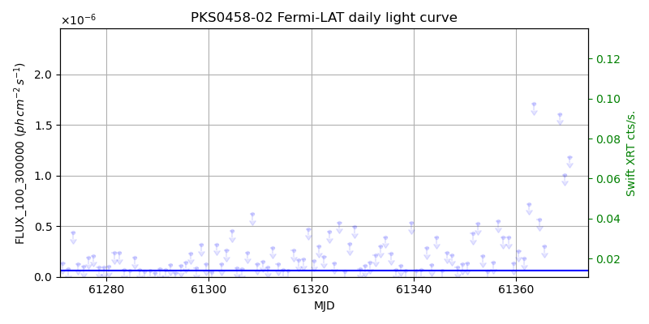
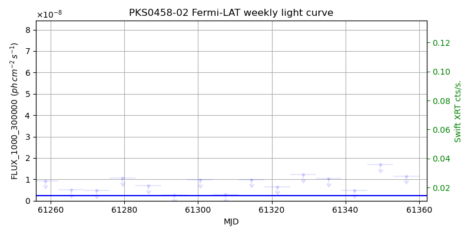

LAT Lightcurve site: https://fermi.gsfc.nasa.gov/ssc/data/access/lat/msl_lc/source/NRAO_190
Swift site: https://www.swift.psu.edu/monitoring/source.php?source=PKS0458-02
NED: Query
Time of last update of this page: UT: 2026-11-20 16:15 (MJD: 61364.677)
| Property | Value |
|---|---|
| R.A. | 4:42:38.64 |
| Dec. | -0:17:42.0 |
| z | 0.844 |
| 3FGL SpectrumType | PowerLaw |
| 3FGL PL Index | 2.41 |
| 3FGL Flux_100_300000 | 6.03e-08 1 / (s cm2) |
| 3FGL Flux_1000_300000 | 2.33e-09 1 / (s cm2) |
| 3FGL Flux >200 GeV | 1.30e-12 1 / (s cm2) |
| 3FGL Extrap. Crab >200 GeV | 0.01 |
| 3FGL Flux After EBL Absorption >200GeV | 4.11e-14 1 / (s cm2) |
| 3FGL EBL Crab Fraction >200GeV | 0.00 |

| MJD | dMJD | Flux | dFlux | Frac3FGL | FracCrab>200GeV | EBLFracCrab>200GeV |
|---|---|---|---|---|---|---|
| 61359.50 | 0.50 | 1.33e-07 | 0.00e+00 | 0.00 | 0.00 | 0.00 |
| 61360.50 | 0.50 | 2.56e-07 | 0.00e+00 | 0.00 | 0.00 | 0.00 |
| 61361.50 | 0.50 | 1.78e-07 | 0.00e+00 | 0.00 | 0.00 | 0.00 |
| 61362.50 | 0.50 | 7.21e-07 | 0.00e+00 | 0.00 | 0.00 | 0.00 |
| 61363.50 | 0.50 | 1.71e-06 | 0.00e+00 | 0.00 | 0.00 | 0.00 |
| MJD | dMJD | Flux | dFlux | Frac3FGL | FracCrab>200GeV | EBLFracCrab>200GeV |
|---|---|---|---|---|---|---|
| 61328.50 | 3.50 | 8.37e-08 | 0.00e+00 | 0.00 | 0.00 | 0.00 |
| 61335.50 | 3.50 | 8.85e-08 | 0.00e+00 | 0.00 | 0.00 | 0.00 |
| 61342.50 | 3.50 | 8.93e-08 | 0.00e+00 | 0.00 | 0.00 | 0.00 |
| 61349.50 | 3.50 | 1.04e-07 | 0.00e+00 | 0.00 | 0.00 | 0.00 |
| 61356.50 | 3.50 | 1.48e-07 | 0.00e+00 | 0.00 | 0.00 | 0.00 |

| MJD | dMJD | Flux | dFlux | Frac3FGL | FracCrab>200GeV | EBLFracCrab>200GeV |
|---|---|---|---|---|---|---|
| 61359.50 | 0.50 | 6.52e-08 | 0.00e+00 | 0.00 | 0.00 | 0.00 |
| 61360.50 | 0.50 | 2.07e-08 | 0.00e+00 | 0.00 | 0.00 | 0.00 |
| 61361.50 | 0.50 | 3.11e-08 | 0.00e+00 | 0.00 | 0.00 | 0.00 |
| 61362.50 | 0.50 | 5.38e-08 | 0.00e+00 | 0.00 | 0.00 | 0.00 |
| 61363.50 | 0.50 | 6.65e-08 | 0.00e+00 | 0.00 | 0.00 | 0.00 |

| MJD | dMJD | Flux | dFlux | Frac3FGL | FracCrab>200GeV | EBLFracCrab>200GeV |
|---|---|---|---|---|---|---|
| 61328.50 | 3.50 | 1.23e-08 | 0.00e+00 | 0.00 | 0.00 | 0.00 |
| 61335.50 | 3.50 | 1.03e-08 | 0.00e+00 | 0.00 | 0.00 | 0.00 |
| 61342.50 | 3.50 | 4.93e-09 | 0.00e+00 | 0.00 | 0.00 | 0.00 |
| 61349.50 | 3.50 | 1.70e-08 | 0.00e+00 | 0.00 | 0.00 | 0.00 |
| 61356.50 | 3.50 | 1.15e-08 | 0.00e+00 | 0.00 | 0.00 | 0.00 |
--------------------------------------------------------- Using user-supplied coords: 4:42:38.64 -0:17:42.0 2000 --------------------------------------------------------- FLWO UT night of: 2026-11-21 Local Sid. @ Midnight: 03:37 Sunset (-15.0) (local, UT): 18:33 01:33 Sunrise (-15.0) (local, UT): 05:47 12:47 Moonrise (local, UT): Moonset (local, UT): 03:40 10:40 Moon phase: 0.85 --------------------------------------------------------- AzTime LSID UT Obj_el Obj_az Mn_el Mn_az Sep. --------------------------------------------------------- 18:33 22:09 01:33 -7.5 85.6 47.9 117.4 62.1 19:03 22:39 02:03 -0.5 89.6 53.3 125.0 61.9 19:33 23:09 02:33 5.4 93.5 58.2 134.7 61.8 20:03 23:39 03:03 11.7 97.6 62.3 146.9 61.7 20:33 00:09 03:33 18.0 101.8 65.1 162.1 61.5 21:03 00:39 04:03 24.1 106.4 66.3 179.7 61.4 21:33 01:09 04:33 30.2 111.4 65.4 197.5 61.2 22:03 01:39 05:03 36.0 117.0 62.9 213.2 61.1 22:33 02:09 05:33 41.6 123.6 59.0 225.9 60.9 23:03 02:39 06:03 46.6 131.3 54.2 235.9 60.8 23:33 03:09 06:33 51.1 140.5 48.9 243.9 60.6 00:03 03:39 07:03 54.7 151.5 43.2 250.4 60.5 00:33 04:10 07:33 57.1 164.2 37.3 255.9 60.3 01:03 04:40 08:03 58.1 178.2 31.2 260.7 60.1 01:33 05:10 08:33 57.5 192.2 25.1 265.1 59.9 02:03 05:40 09:03 55.4 205.3 19.0 269.2 59.7 02:33 06:10 09:33 52.1 216.8 12.9 273.0 59.5 03:03 06:40 10:03 47.9 226.4 6.8 276.9 59.3 03:33 07:10 10:33 42.9 234.5 1.0 280.7 59.0 04:03 07:40 11:03 37.5 241.4 -4.9 284.7 58.8 04:33 08:10 11:33 31.7 247.2 -11.1 288.8 58.5 05:03 08:40 12:03 25.7 252.4 -16.8 293.2 58.2 05:33 09:10 12:33 19.6 257.0 -22.3 298.1 57.9 05:47 09:25 12:47 16.6 259.1 -24.8 300.5 57.7 --------------------------------------------------------- Dark hours >55 deg.: 0.00